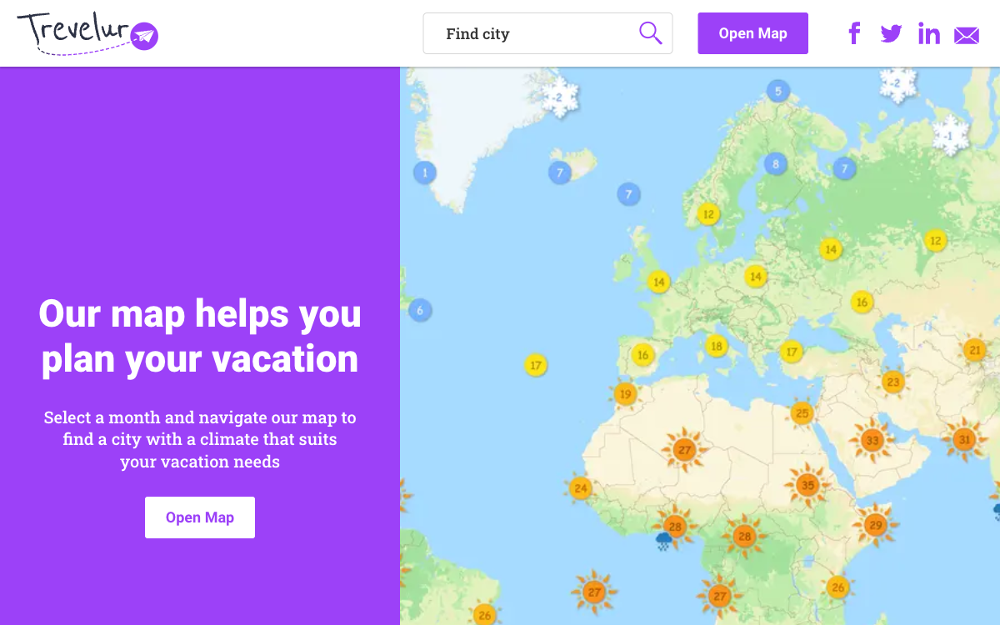
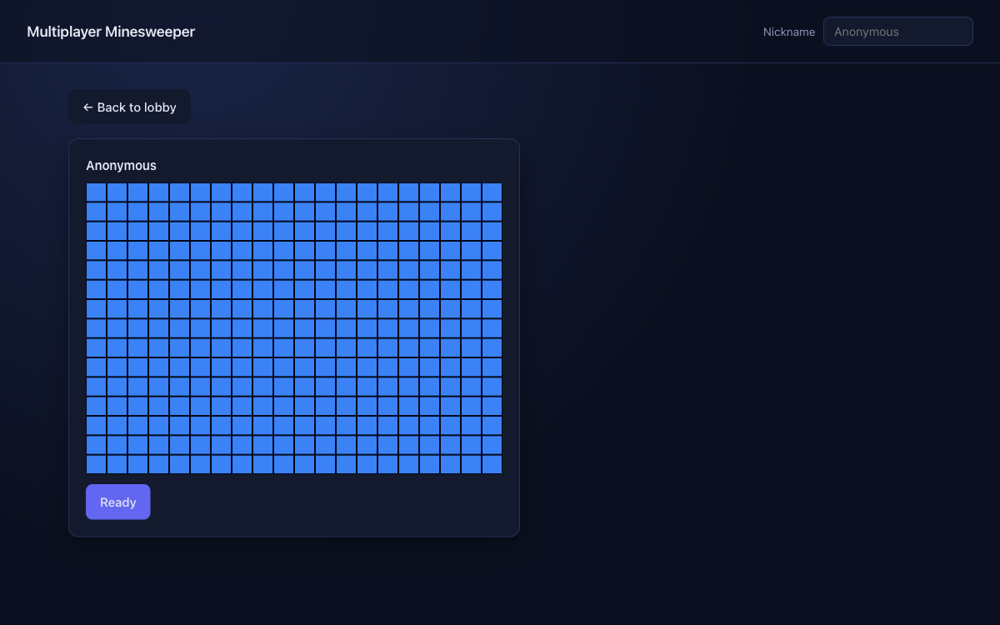
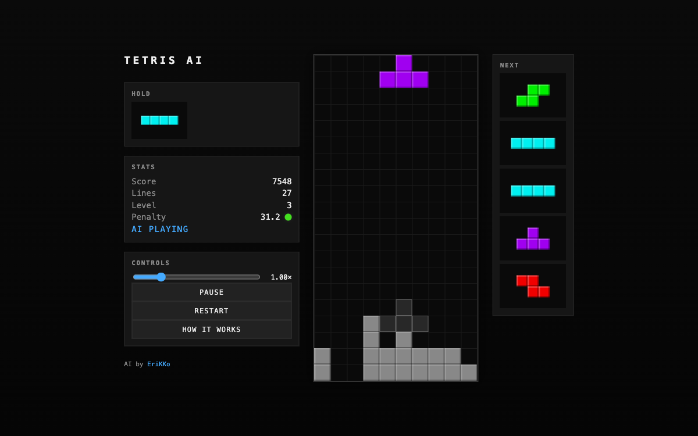
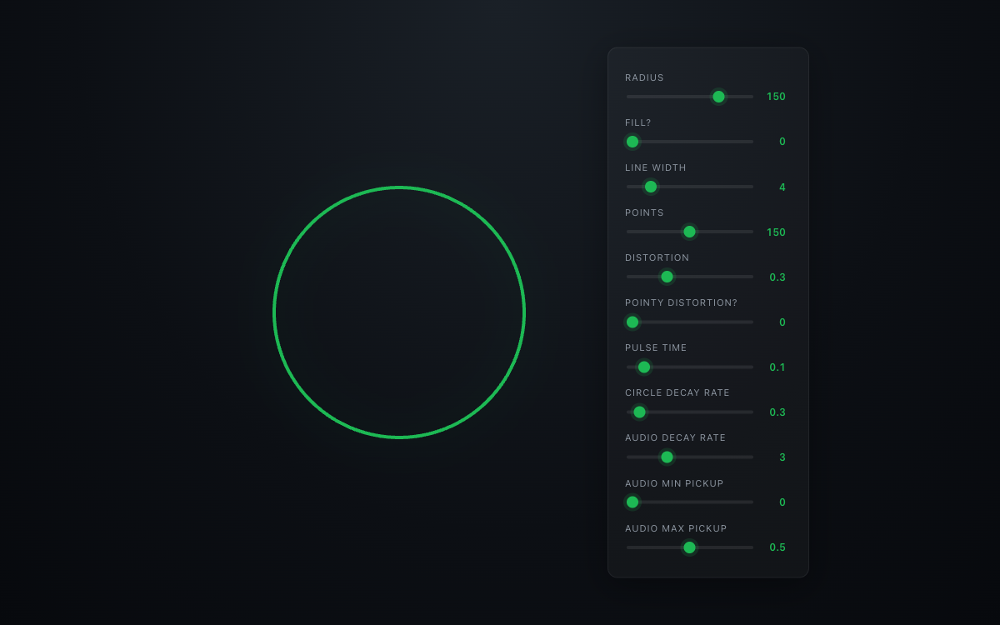

Erik Odenman
Software engineer. Building things, professionally and unprofessionally.
About
I enjoy taking messy problems and turning them into systems that are fun to work with. I've always been drawn to algorithms and writing bots. There is something about programming them to do something and then see them act (often unexpectedly) that is very satisfying. Below is a weird mix of projects I've written during the years, ranging from month-long to ones done in an afternoon.
Projects
-

Trevelur
Travel planner that helps you find your next trip by climate. Pick a month, explore destinations on an interactive world map, and check vaccine and visa requirements per stop.
-

-

-
